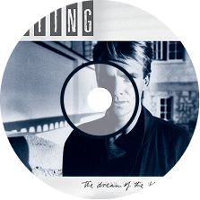
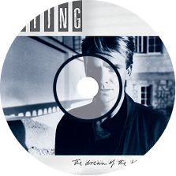

In Europe and America, there's a growing feeling of hysteria
유럽과 미국에선 광기가 퍼지고 있어요
Conditioned to respond to all the threats
우리는 모든 위협에 반응하도록 훈련되어 있죠
In the rhetorical speeches of the Soviets
소련의 수사적인 연설에 반응하며 말이에요
Mr. Khrushchev said, 'We will bury you'
후르시초프는 '우리가 너희를 묻어줄 것이다'라고 말했죠
I don't subscribe to this point of view
저는 그런 시각엔 동의하지 않아요
It'd be such an ignorant thing to do
그건 너무 무지한 일이니까요
If the Russians love their children too
만약 러시아인들도 자식을 사랑한다면 말이죠
How can I save my little boy from Oppenheimer's deadly toy?
어떻게 내 아이를 오펜하이머의 죽음의 장난감에서 구할 수 있을까요?
There is no monopoly of common sense
상식은 어느 한쪽의 전유물이 아니에요
On either side of the political fence
정치의 경계 양편 모두에 상식은 존재하죠
We share the same biology, regardless of ideology
우리는 이념과 무관하게 같은 생물학적 존재예요
But what might save us, me and you
그러나 우리, 나와 당신을 구할 수 있는 건
Is if the Russians love their children too
러시아인들도 아이를 사랑한다는 사실일지도 몰라요
There is no historical precedent
역사에 전례는 없었죠
To put the words in the mouth of the president
대통령의 입에서 그런 말이 나오게 만들고
There's no such thing as a winnable war
이길 수 있는 전쟁 같은 건 존재하지 않아요
It's a lie we don't believe anymore
우린 더 이상 그런 거짓말을 믿지 않아요
Mr. Reagan says, 'We will protect you'
레이건은 '우리가 당신을 지켜주겠다'고 말했죠
I don't subscribe to this point of view
전 그런 시각을 지지하지 않아요
Believe me when I say to you
제가 하는 말을 믿어주세요
I hope the Russians love their children too
저는 러시아인들도 자식을 사랑하길 바라요
 
